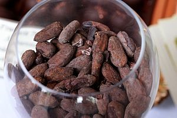
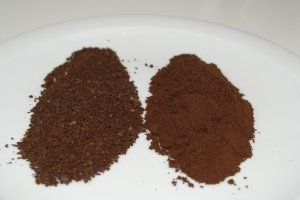
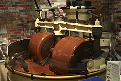
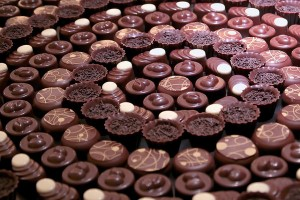

Suklaan matka maailmalta luoksesi
Kaakaopuu eli kaakao (Theobroma cacao) on trooppinen kasvi, joka tarvitsee kasvamiseen 25–28 celsiusasteen lämpötilan ja 1 000–2 000 millimetrin vuotuisen sademäärän. Kaakaopuu kasvaa luonnonvaraisena trooppisessa Etelä-Amerikassa ja viljeltynä kuuman vyöhykkeen kaikissa maissa. Kaakaopuun hedelmät ovat keltaisia tai punaisia, kurkunmuotoisia marjoja, jotka riippuvat puun rungosta. Kaakaoviljelmien puut kasvavat yleensä suurempien puiden suojassa. Puut alkavat tuottaa täyttä satoa 6–7 vuoden ikäisinä. Suurin osa maailman suklaasta saadaan Forastero-lajikkeesta. Criollo-lajikkeesta saadaan miedomman makuista suklaata, mutta se ei ole yhtä satoisa kuin Forastero. Kolmas päälajike on Trinitario, joka on edellisten risteytys.

Kaakaopuun siemeniä eli kaakaopapuja käytetään suklaan ja kaakaon valmistuksessa. Kaakaohedelmät poimitaan puista, hedelmät halkaistaan ja niiden sisällä olevat pavut erotellaan.
Siemenet poimitaan kaakaopuun hedelmistä käsin, kasataan läjiin, kaivetaan maahan tai pannaan puu- tai sementtiastioihin käymään eli fermetoidaan.
Fermentointi kestää muutaman päivän, ja sen aikana pavuissa tapahtuu kemiallisia reaktioita ja syntyy sokereita ja happoja, mikä antaa niille tunnusomaisen maun ja värin.
Seuraavaksi pavut kuivataan, jotta ne eivät homehtuisi. Kuivattaminen tapahtuu yleensä auringossa, mikäli mahdollista. Kuivattaminen kestää noin viikon, minkä jälkeen papujen kosteus on 7–8 %.
Pavut pakataan kuivattamisen jälkeen 60–65 kilogramman juuttisäkkeihin ja rahdataan muista elintarvikkeista ja kosteudesta erillään prosessoitavaksi.
Kuivatuissa ja kuorituissa kaakao-pavuissa on 37-54 % rasvaa ja muun muassa jonkin verran valkuaisaineita, hiilihydraatteja ja teobromiinia (1-4 %).
Viisi suurinta kaakaopapujen tuottajamaata ovat Norsunluurannikko 38 %, Ghana 21 %, Indonesia 13 % Nigeria 5 % ja Kamerun 5 %.
Voimakas ja täyteläinen kaakaopapu on monipuolinen raaka-aine monenlaiseen leivontaan, ruoanlaittoon ja naposteluun.

Kaakaopavut paahdetaan, kuoritaan, jauhetaan ja puserretaan kuumuudessa, käsitellään emäksillä ja jauhetaan sen jälkeen uudelleen.
Suklaa on puristetun ja puristamattoman kaakaon, sokerin ja erinäisten mausteiden (vaniljan, kanelin) seos. Puserrustuotteena pavuista saadaan kaakaovoita eli kaakaorasvaa,
joka sulaa 30-35 asteen lämmössä ja jota käytetään lääkkeiden ja saippuan sekä hienojen suklaalajien valmistukseen.
Kaupan makeutetut kaakaojauheet ja kaakaojuomajauheet sisältävät pääasiassa sokeria. Nimikkeellä ”makeutettu kaakaojauhe” saa myydä EU:ssa tuotetta, jossa on vähintään 32 prosenttia kaakaota.
”Kaakaojuomajauheen” pitää sisältää vähintään 25 prosenttia kaakaojauhetta. Loppu on sokeria.
 Varsinainen suklaan valmistus alkaa kaakaopapujen käsittelyn jälkeen. Suklaan valmistuksessa raaka-aineita ovat nestemäinen kaakaomassa, kaakaovoi sekä sokeri ja joskus myös maito tai maitojauhe (mm. maito-ja valkosuklaassa). Raaka-aineet sekoitetaan keskenään ja valmistunut tahna puristetaan useiden valssien välissä mahdollisimman hienojakoiseksi. Sen jälkeen tahnaan sekoitetaan kaakaovoita konssaamalla, menetelmällä joka keksittiin vuonna 1878. Sen avulla tahmea suklaatahna muutetaan suussasulavan pehmeäksi ja tarpeeksi nestemäiseksi, jotta siitä voidaan tehdä valmista suklaata. Konssauksen loppuvaiheessa massaan lisätään vielä kaakaovoita ja usein myös emulgointiaineita kuten soijalesitiiniä parantamaan suklaamassan viskositeettia. Kaakaovoikiteiden täytyy olla oikean kokoisia, jotta valmis suklaa olisi kovuudeltaan oikeanlaista ja sulaisi oikeassa lämpötilassa. Sula suklaa saadaan kiinteytymään haluttuun rakenteeseen temperoinnilla, jossa suklaa saa sen ominaisen rakenteen. Temperointi on lämpökäsittelyä, jossa suklaata lämmitetään ensin 45-50 asteessa, jonka jälkeen se jäähdytetään 28 asteeseen ja lämmitetään uudelleen 30 asteeseen. Tällöin ei-toivotut alhaisen sulamispisteen omaavat kiderakenteet saadaan sulamaan ja kiteytymään uudelleen haluttuun muotoon.
 Suklaa kaadetaan suuttimien läpi muotteihin, jotka liikkuvat tärisevällä kuljetushihnalla. Hihnalla suklaa johdetaan muoteissa viileään ilmaan, missä se jäähtyy ja supistuu. Muotit käännetään ympäri, ja suklaapalat kääräistään tinapaperiin ja kuljetetaan pakkaamoon. Täytesuklaata voidaan tehdä kahdella tavalla. Ensimmäisessä tavassa, jota käytetään etenkin täytesuklaalevyihin, suklaa valutetaan ensin muotteihin. Ne käännetään sitten ympäri niin että enin suklaa valuu pois ja sitä jää vain muotin seinämille. Sen jälkeen muotteihin kaadetaan täyte, joka lopuksi peitetään suklaalla. Toisessa tavassa, jota käytetään etenkin suklaakonvehtien teossa, kiinteät täytteet viedään kuljetinhihnalla rivissä kuorrutuskoneeseen ja niiden päälle valutetaan suklaakerros. Liköörikonvehdin teossa kuuma sokeriliuos valutetaan maissitärkkelyspuuterissa oleviin syvennyksiin. Liuokseen muodostuu jäähtyessään kuori, jonka päälle suklaa valutetaan.